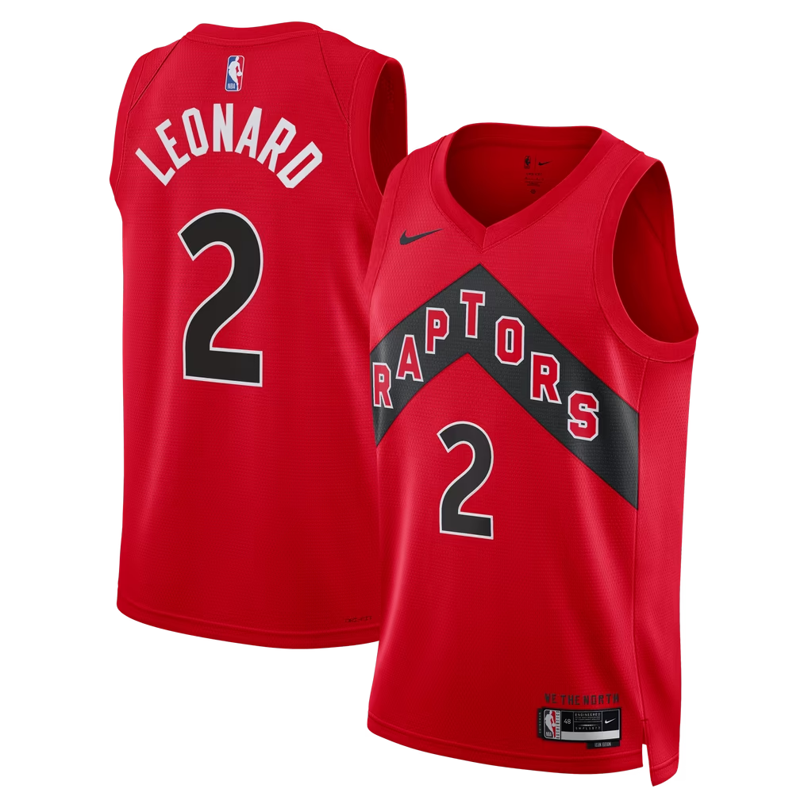
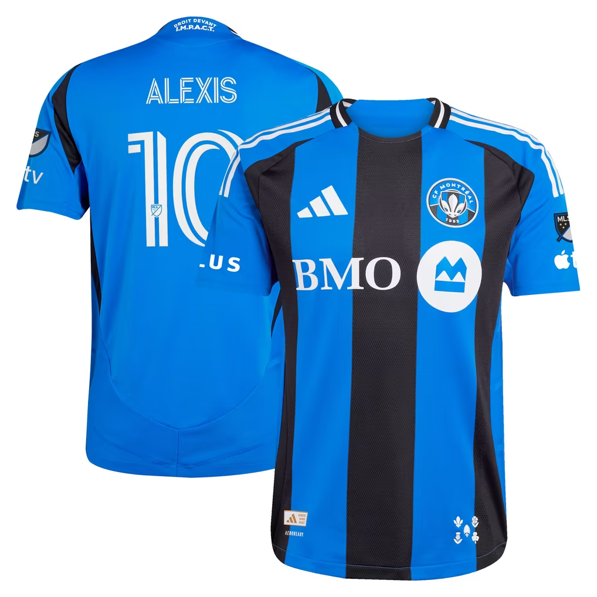
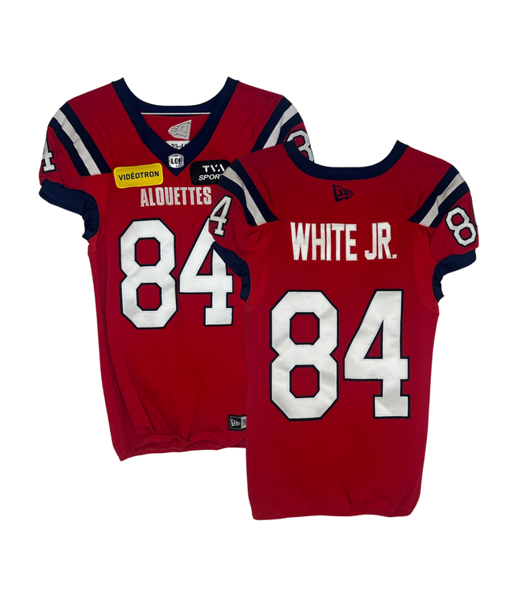

NOTRE UNIVERS
Une équipe, un sport, une passion
JP JERSEY est une marque pour les passionnés de sports. Notre objectif est de permettre aux fannatique de soccer, basketball et football de représenter leur équipe avec fierté et style. Pour nous, un jersey c'est bien plus qu'un simple vêtement, il représente 3 mots: une équipe, un sport et une passion.
NOS COLLECTIONS

Collection Basketball
Découvrez notre collection de jerseys de Basketball des grandes équipes et des joueurs.

Collection Soccer
Représentez votre club favorite avec notre sélection de jerseys de soccer.

Collection Football
Afficher fièrement les couleurs de vos équipes préférées de football avec notre selection de jerseys.
ÉTAPES POUR CHOISIR SON JERSY
- Choisir son sport préféré.
- Sélectionner son équipe favorite.
- Choisir le modèle et la taille désirés.
- Représenter fièrement son équipe !